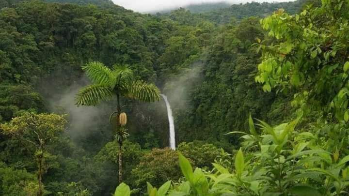
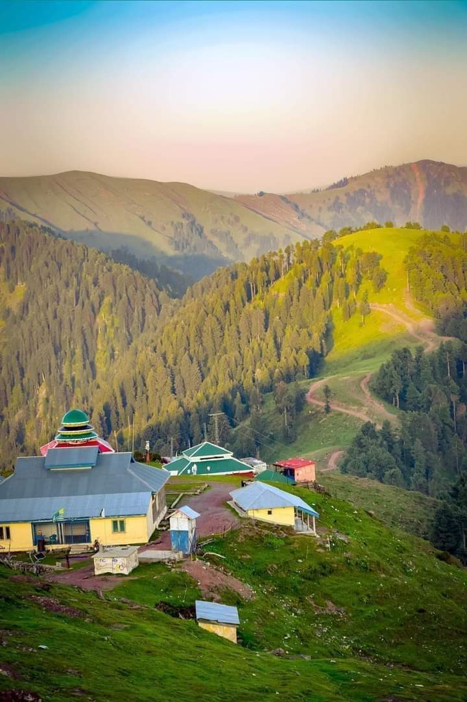
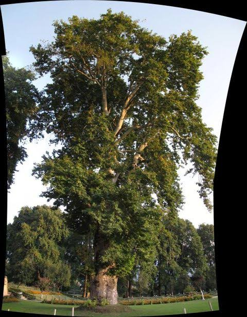
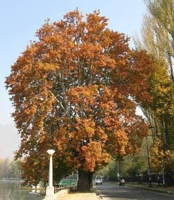
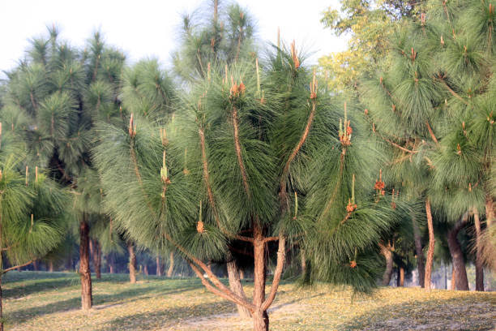
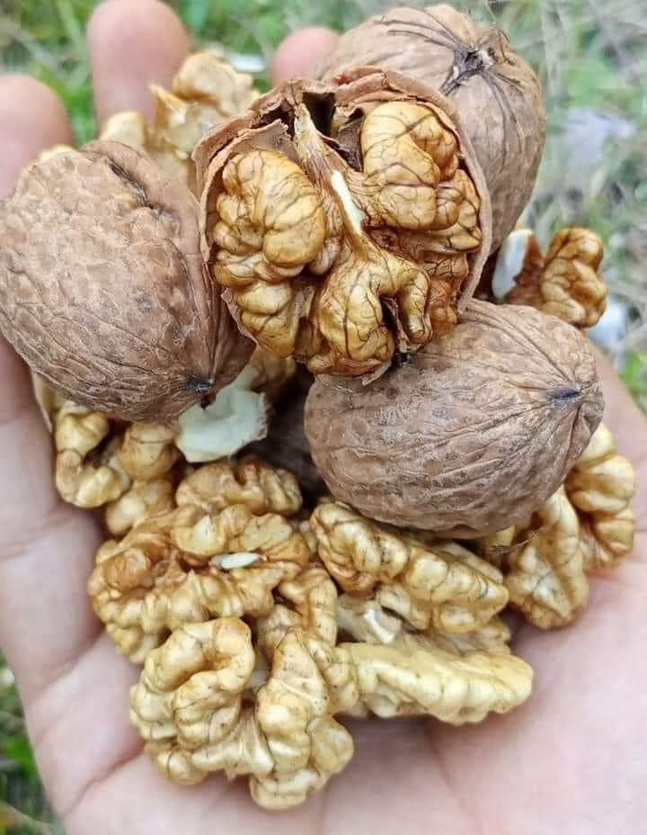

Muzaffarabad is a city in Azad Kashmir. It is the largest city and the capital of Azad Kashmir . The city is located in Muzaffarabad District, near the confluence of the Jhelum and Neelum rivers.
Rawalakot is the capital of the Poonch District of Azad Kashmir. It is in a saucer-shaped valley at elevation 1615 metres (5300 ft), and 76 km from Kohalla.Mirpur is located at the South West of Azad Kashmir at an elevation of 459 metres (1509 ft), not far from Islamgarh.
Famous lakes
It is located at an altitude of 1,981 meters (6,499 ft). This lake is 160 kilometers away from Rawalpindi. Banjosa Lake was rebuilt by Shoukat Hussain, a well-known contractor of Poonch District. The lake, which is surrounded by dense pine forest and mountains, is accessible by a metalled road from Rawalakot.Dal Lake
Dal is a freshwater lake in Srinagar, the summer capital of the Indian-administered Jammu and Kashmir in the disputed Kashmir region.waterfalls form as streams flow from soft rock to hard rock. This happens both laterally (as a stream flows across the earth) and vertically (as the stream drops in a waterfall). In both cases, the soft rock erodes, leaving a hard ledge which the stream falls.

Kashmir famous trees




Kashmir famous fruit

.jpeg)
.jpeg)
.jpeg)
.jpeg)
.jpeg)